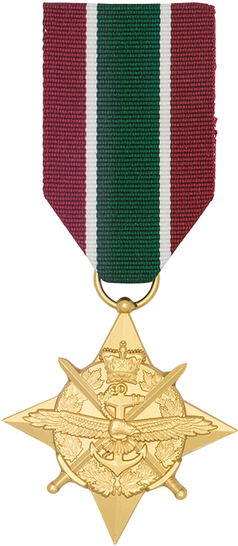
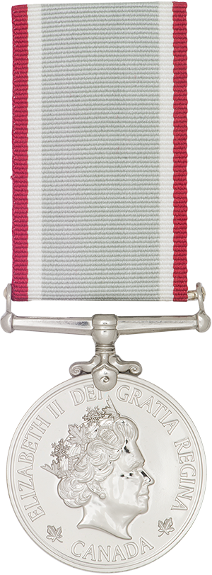
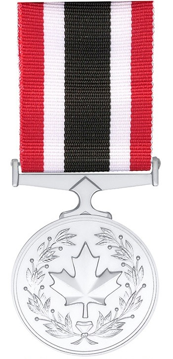

De militaire à programmeur
Mon parcours et mes réalisations
Mes objectifs professionnels
J'ai l'intention d'utiliser les six ans de carrière qu'il me reste dans les Forces armées canadiennes (FAC)
pour apprendre les skills nésécaire pour devenir sois ingénieur en logiciel robotique
ou développeur Full-Stack.
J'ai commencé une formation en ligne de développeur web Full-Stack.
J'ai l'intention de prendre les prochain deux ans afin de me perfectionner dans ce domaine avant
de me spécialiser en robotique.
Mes formations
Au cours des 18 dernières années, j'ai eu la chance de faire énormément de cours et de formation avec les
FAC,
en voici quelque une.
- Spécialisation avancé en reconnaissance
- Tireur d'élite
- Instructeur et aviseur avancé en montagne
- Plusieurs cours de leadership :
- La formation de Caporal chef : adjoint de section
- La formation de Sergent : commandant de section
- The complete full-stack wb development bootcamp donné par Dr Angela Yu
Mes expériences professionnels
Au sein des FAC, j'ai déployé à trois reprise et voici ces trois déploiement :
Mes mission
- Une mission de combat pour l'OTAN en Afghanistant;
- Une mission de enseignement pour l'OTAN au Niger;
- Une mission de présence pour l'OTAN en Lettonie.
Mes skills
Je suis présentement en train d'apprendre la programmation.
Voici les éventuel language que je veux connaitre.
| Language |
Statut d'apprentisage |
But |
| HTML5 |
5% |
Développeur web |
| CSS3 |
0% |
Développeur web |
| JAVASCRIPT |
0% |
Développeur web/logiciel |
| PYTON3 |
5% |
Développeur logiciel en robotique |
| C++ |
0% |
Développeur logiciel |
J'ai l'intention d'apprendre le front-end et le back-end afin de devenir un développeur complet.
Mes récompenses
Au cours de mes 18 ans de carrière, j'ai participer à de nombreuse compétition et reçu plusieurs prix.
Voici mes médaille militaires
| Mission/Raison |
Médaille |
Nom de la médaille |
| En Afghanistant |
 |
Étoile de campagne générale
Asie du Sud-Ouest
(ÉCG-ASO) |
| Au Niger |
 |
Médaille du service opérationnel
Expédition
(MSO-EXP) |
| En Lettonie |

| Médaille du service spécial
(MSS) |
| 12 années de service |

| Décoration des Forces canadiennes
(CD) |
Mes loisirs
Pour voir mes différents loisirs, veuillez suivre ce lien : Mes loisirs